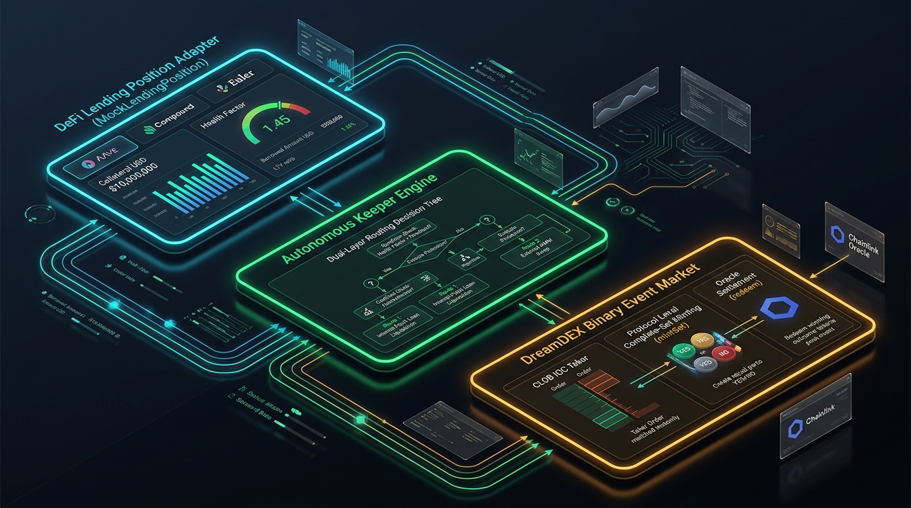

ChronoShield Developer Guide
ChronoShield delivers autonomous, deterministic DeFi solvency protection by bridging an on-chain lending position adapter with DreamDEX binary event prediction markets on the Somnia Shannon Testnet (Chain ID 50312).
System Architecture
HUD VisualizationHigh-tech overview showing the three core operational nodes: the On-Chain Solvency Adapter, the Autonomous Keeper Decision Engine, and the DreamDEX Binary Event Derivative Layer.

📜 Limitations & Architectural Scope
ChronoShield models borrower solvency via a purpose-built, on-chain adapter contract (MockLendingPosition.sol deployed at 0x728b...6343) exposing live state storage for collateral, debt, and health factors, rather than directly integrating with a live mainnet Aave or Compound deployment. Flash-crash market conditions are induced via an on-chain applyShock(percent) state transition.
However, the downstream hedging and redemption pipeline against DreamDEX—including dynamic binary market lookup, orderbook depth evaluation, mintSet complete-set generation, and collateral payout redemption via redeem()—is 100% live, automated, and verified on Somnia Shannon Testnet (Chain ID 50312).
Dual-Layer Fallback Routing
Standard taker bots fail when orderbooks are dry, crashing with ImmediateOrCancelNoFill. ChronoShield eliminates this failure mode through adaptive routing:
When the central limit orderbook has resting limit orders at or below maximum acceptable slippage, the keeper immediately consumes existing depth.
If the orderbook is empty or lacks volume, the keeper bypasses the CLOB entirely and invokes protocol-level complete-set minting, securing downside coverage with 0% slippage.
Solvency Adapter Specification
MockLendingPosition.sol operates at 0x728b9579edec0e8ef5422f2980c302d5bd266343.
// SPDX-License-Identifier: MIT pragma solidity ^0.8.20; contract MockLendingPosition { uint256 public collateralUsd = 2000 ether; uint256 public borrowedDebtUsd = 1250 ether; uint256 public constant LIQUIDATION_THRESHOLD_BPS = 8500; // 85% function getHealthFactor() external view returns (uint256) { return (collateralUsd * LIQUIDATION_THRESHOLD_BPS * 1e18) / (borrowedDebtUsd * 10000); } function applyShock(uint256 dropPercent) external { collateralUsd = (collateralUsd * (100 - dropPercent)) / 100; } function resetPosition() external { collateralUsd = 2000 ether; } }
On-Chain Verification Tape
EVIDENCE.md| Action | Address / Hash | Block | Outcome |
|---|---|---|---|
| Solvency Adapter | 0x728b...6343 | #484098396 | HF 1.360 Initialized |
| Solvency Shock | 0x8c12...b924 | #484162912 | HF 1.020 (Hazard Active) |
| Complete-Set Mint | 0xa476...cec6 | #484162915 | +2.000 DOWN Hedge Minted |
| Position Reset | 0x02ce...1e45 | #484162918 | Baseline Restored (1.360) |
| Collateral Recovery | 0x42b8...7a73 | #481305363 | +2.000 tUSDC Recycled |
Somnia Markets SDK Feedback
Summary of developer experience feedback submitted in FEEDBACK.md:
await ex.disconnect() to release open WebSocket heartbeat timers in Node.js micro-keepers.
tUSDC collateral parameters in mintSet() to prevent undercollateralized reverts.
status: 'ACTIVE', minTimeRemaining) to listBinaryMarkets().